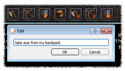

Frostbite
A frontend for Dragonrealms MUD
2.1 Client settings
The Frostbite frontend is still a work in progress and not all functions in the application can be configured. It is currently possible to customize appearance of the game windows, set user macros, filter highlighted text, add text substitutions or ignores and set quick button actions.
Please note that some of the client settings are statically configured into the Frostbite application software and can only be changed in the source code. To make changes to the source code refer to the development page.
Appearance dialog
Can be opened from the main menu (preferences for Max OS X). It allows users to change text color, font and background color of game windows. Please note that the font selector allows to choose from a large selection of system fonts but the game text formatting expects a monospace/fixed-width font to be used.

Highlight dialog
Can be opened from the main menu and it allows to set text color highlighting. The highlight dialog is split up into three subcategories.
- - General highlighting values are statically programmed into the game client and can only be changed in color;
- - Text highlighting allows dynamic entries and it also includes timer triggering settings;
- - Alerts tab provides the means to play sound alert on number of predetermined events.

Users can add new highlights by clicking on the add button. To change highlight text color click the right mouse button on the highlight item and choose "Change color" from the context menu.
Text alterations
Some caution is advised when adding text alterations. As a result text can completely disappear from view or cause malformed text to appear. It is important to note that text contains hidden HTML symbols and entities such as <, >, " etc.
Text alteration dialog is located in the main menu. Alterations can be used to make real time changes to the text shown on screen.
To target alterations to specific windows or temporarily disable alterations press right click on the target alteration item to open the menu.
Text substitutes replace text matched by the regular expression and text ignores can be used to ignore an entire line if text match is found.

Text matching in alterations is based on a Perl-compatible regular expression engine. All invalid regular expressions are treated as void entries and displayed as red background on the input field.
Common characters and abbreviations:
| c | Character represents itself unless it has a special regexp meaning. | \d | Matches a digit. |
| \c | A character that follows a backslash matches the character itself. | \D | Matches a non-digit. |
| \a | Matches the ASCII bell (BEL, 0x07). | \s | Matches a whitespace character. |
| \f | Matches the ASCII form feed (FF, 0x0C). | \S | Matches a non-whitespace character. |
| \n | Matches the ASCII line feed (LF, 0x0A, Unix newline). | \w | Matches a word character. |
| \r | Matches the ASCII carriage return (CR, 0x0D). | \W | Matches a non-word character. |
| \t | Matches the ASCII horizontal tab (HT, 0x09). | \n | The n-th backreference, e.g. \1, \2, etc. |
| . | (dot) Matches any character (including newline). |
Macros/Sequences
Macros allow users to bind game commands to specified key combinations. In addition to macros Frostbite frontend also supports key sequences, meaning that you can delay a predetermined amount of time between each command, which makes it possible to enter 3 or more commands in a single sequence (game only supports 2 consecutive commands).
For example running a command sequence - "look$nlook$slook$n", will wait before executing the last command for a predetermined amount of time. The sequence timer can be configured from the macro dialog.
Keywords used in macros:
$n - new line
$s - new sequence line (pauses for sequence time and then puts a new line)
@ - caret position (only eligible with no trailing $n or $s commands)

Quick button actions
Quick button actions can be changed by clicking the right mouse button on the target button.
